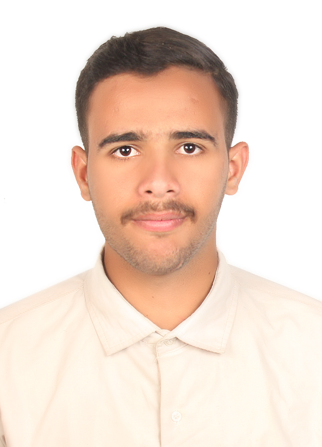

Abdullah Ameen Rassam Al-Sharabi ✔
Welcome to my portfolio!
I am ing a passionate Software Engineering
Student with a deep interest in building software
projects that make a real impact. My goal is to develop innovative and efficient solutions that
enhance the digital world . With a strong foundation in programming and problem-solving, I strive to
create high-quality software that meets modern technological demands.
Dowonload_CV
align="center">"Technology is not just about coding; it's about solving real-world problems and making life
easier."
abuot
I am Abdullah Ameen Rassam Al-Sharabi, a software engineering student aspiring to become a creative software
engineer in the future. I am passionate about building software projects and developing technical solutions. I excel
in handling work pressure, ensuring precision, and working diligently to achieve goals within the set timeframe.
Education
Taiz University – Software Engineering Major
Omar Bin Abdul Aziz School – General Education
Global Institute for Languages – English Language Studies
experience
I have experience in multiple programming languages and web development, having worked on various projects using:
Programming Languages: Java, Python
Web Development Technologies: HTML, CSS, JavaScript
Back-end Development: Developing server-side applications for web systems
skills
Technical Skills
Back-end Development
Proficiency in multiple programming languages
Problem-solving and analytical thinking
non-technical skills
Leadership and teamwork
Effective communication
Ability to adapt and integrate into different work environments
crtificates
projects
School Management System: Developed a system to manage school operations, including student and teacher data.
Supermarket System: Built a system for sales and inventory management in supermarkets.
services
I help others understand their fields of work, especially in programming and software development, whether they are
beginners or professionals.
technologies
contect
You can reach out to me via email or through my professional platforms. (You can add your email or links to
LinkedIn, GitHub, etc.)
© ABDULLAH ALSHARABI 2025/2/20 😊